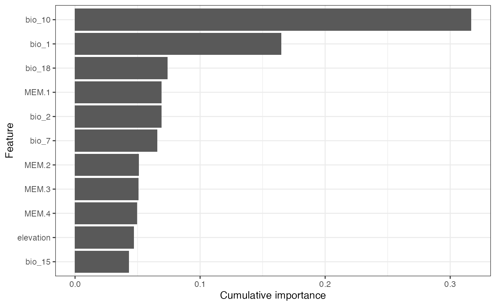
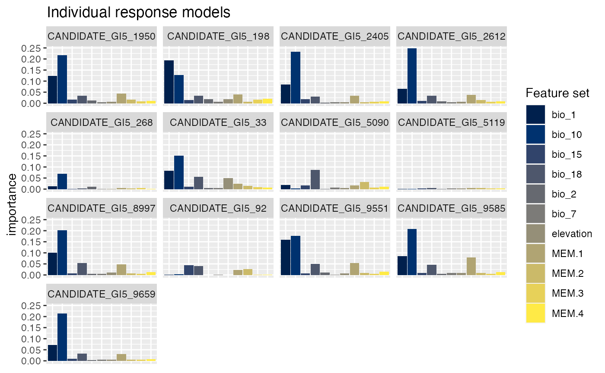
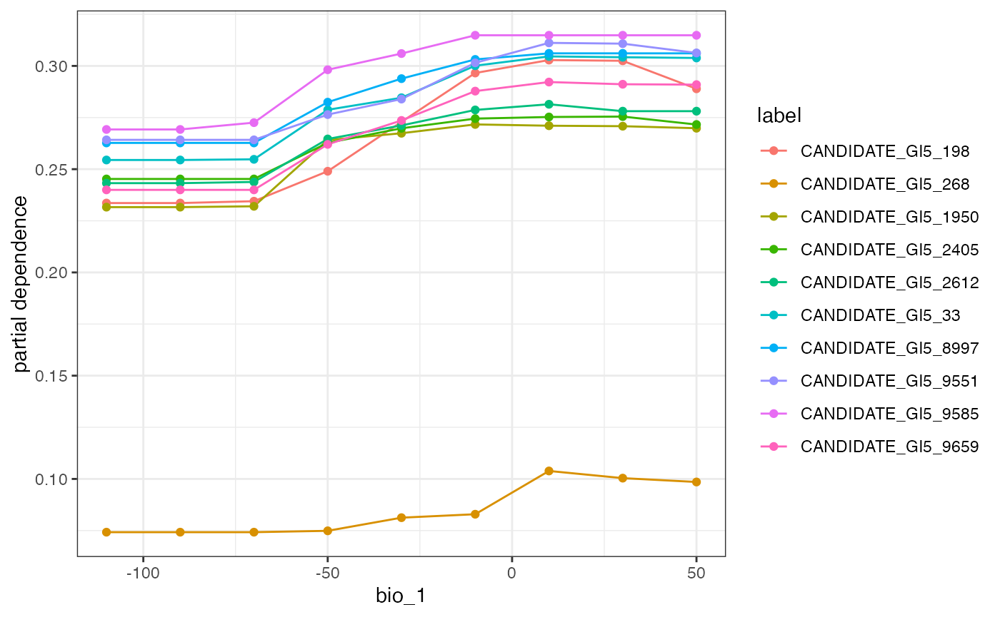
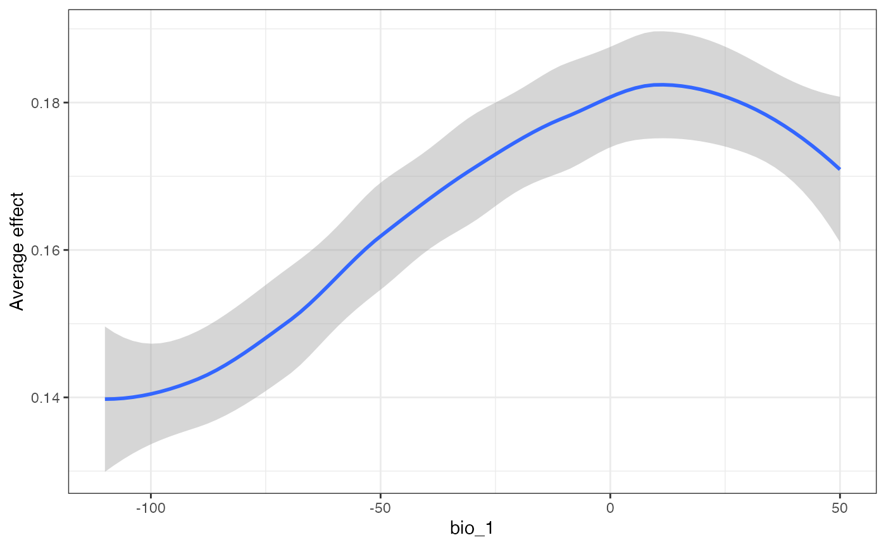
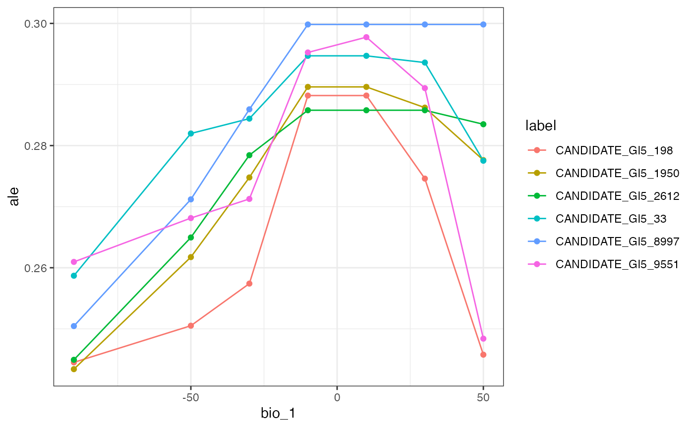
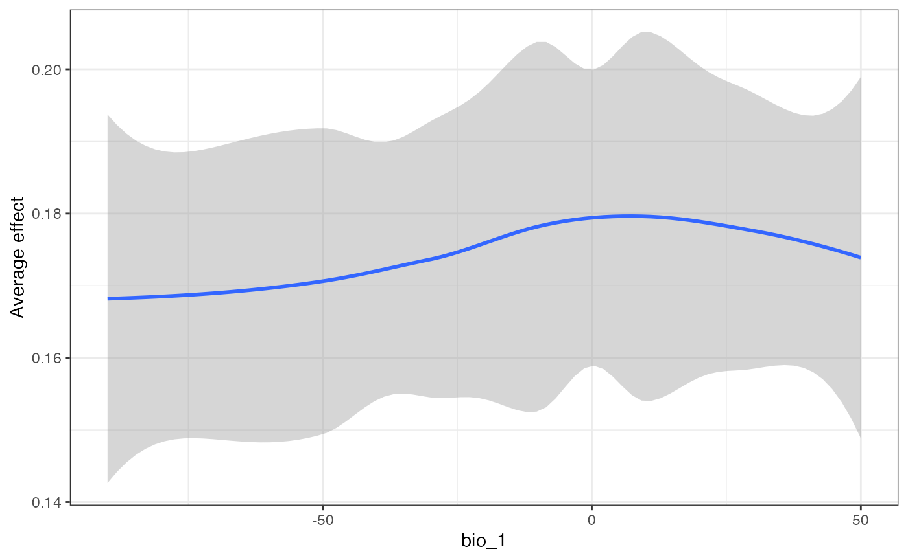
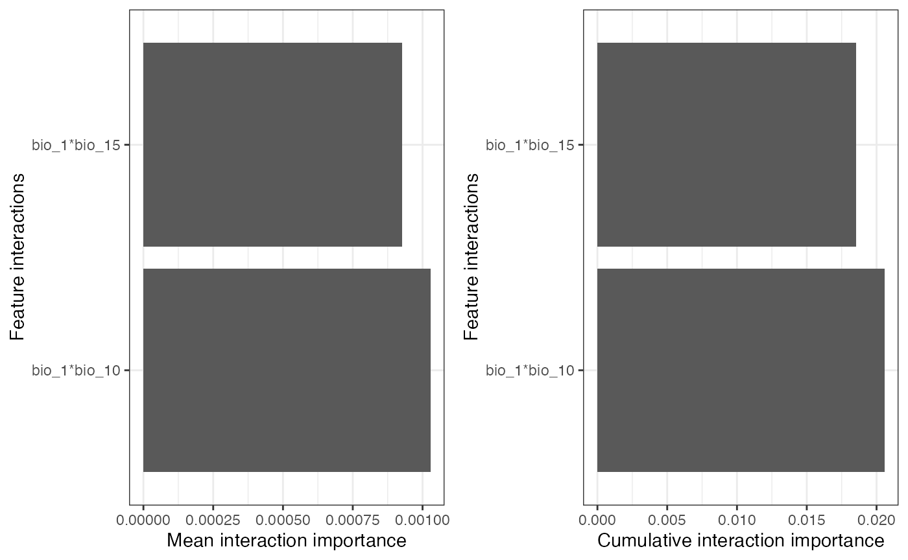
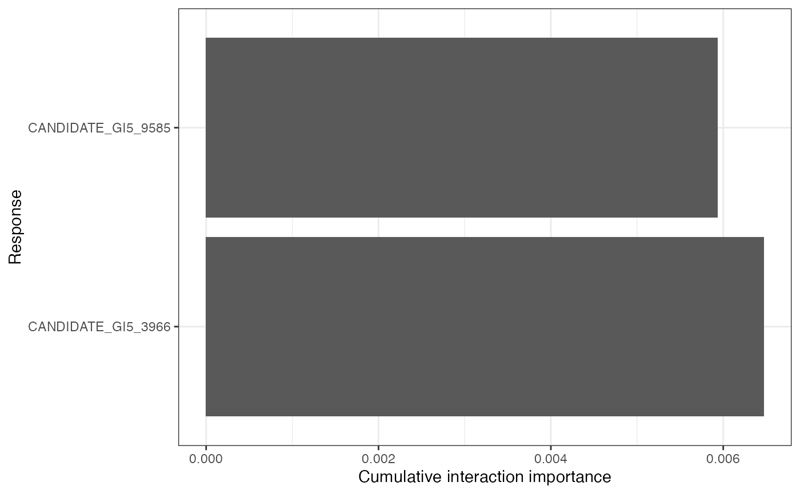
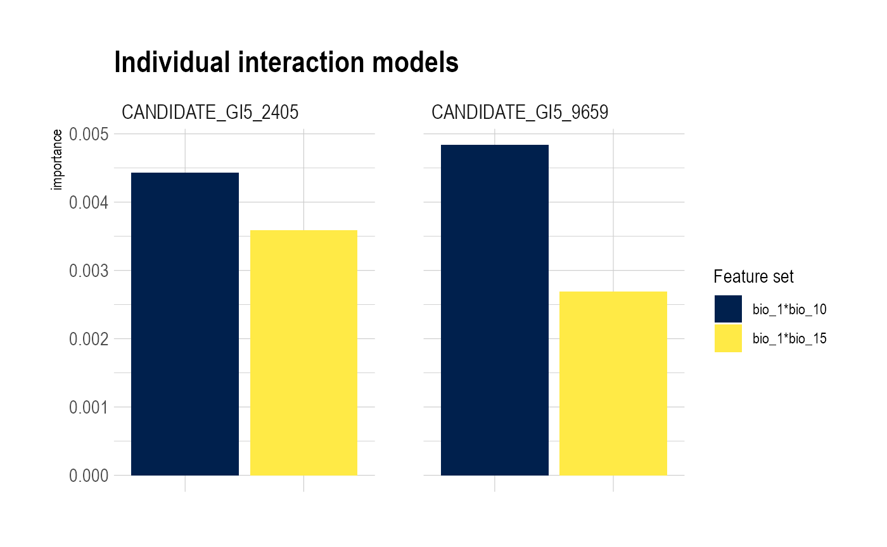

Regression working example
Nick Fountain-Jones, Gustavo Machado
2021-04-22
Source:vignettes/Vignette_regression.Rmd
Vignette_regression.Rmd
MrIML is a R package allows users to generate and interpret multi-response models (i.e., joint species distribution models) leveraging advances in data science and machine learning. MrIML couples the tidymodel infrastructure developed by Max Kuhn and colleagues with model agnostic interpretable machine learning tools to gain insights into multiple response data such as. As such mrIML is flexible and easily extendable allowing users to construct everything from simple linear models to tree-based methods for each response using the same syntax and same way to compare predictive performance. In this vignette we will guide you through how to apply this package to ecological genomics problems using the regression functionality of the package. This data set comes from Fitzpatrick et al 2014 who were examining adaptive genetic variation in relation to geography and climate adaptation (current and future) in balsam poplar(Populus balsamifera). See Ecology Letters, (2014) doi: 10.1111/ele.12376. In this paper they used the similar gradient forests routine (see Ellis et al 2012 Ecology), and we show that MrIML can not only provide more flexible model choice and interpretive capabilities, but can derive new insights into the relationship between climate and genetic variation. Further, we show that linear models of each loci have slightly greater predictive performance.
We focus on the adaptive SNP loci from GIGANTEA-5 (GI5) gene that has known links to stem development, plant circadian clock and light perception pathway. The data is the proportion of individuals in that population with that SNP loci.
Running the analyis
Performing the analysis is very similar to our classification example. Lets start with a constructing a linear model for this data set. We set Model 1 to a linear regression. See https://www.tidymodels.org/find/ for other regression model options Note that ‘mode’ must be regression and in MrIMLpredicts, model has to be set to ‘regression’.
model1 <- #model used to generate yhat
# specify that the model is a random forest
linear_reg() %>%
# select the engine/package that underlies the model
set_engine("lm") %>%
# choose either the continuous regression or binary classification mode
set_mode("regression")
yhats <- mrIMLpredicts(X=X,Y=Y, model1=model1, balance_data='no', model='regression', parallel = TRUE, seed = sample.int(1e8, 1)) ## Balanced data= up updamples and down downsampled to create a balanced set. For regression 'no' has to be selected.
#save(yhats, file='Regression_lm') #always a good ideaModel performance can be examined the same way as in the classification example, however the metrics are different. We provide root mean square error (rmse) and R2. You can see that the overall R2 is 0.13 but there is substantial variation across loci in predictive performance.
ModelPerf <- mrIMLperformance(yhats, model1, X=X, model='regression')
ModelPerf[[1]] #predictive performance for individual responses.
#> response model_name rmse rsquared
#> 1 CANDIDATE_GI5_108 linear_reg 0.04796608 2.546891e-03
#> 2 CANDIDATE_GI5_198 linear_reg 0.15048866 7.624520e-03
#> 3 CANDIDATE_GI5_268 linear_reg 0.10029507 2.906169e-03
#> 4 CANDIDATE_GI5_92 linear_reg 0.06612052 4.426335e-01
#> 5 CANDIDATE_GI5_1950 linear_reg 0.17410673 1.649338e-01
#> 6 CANDIDATE_GI5_2382 linear_reg 0.12773130 1.013087e-01
#> 7 CANDIDATE_GI5_2405 linear_reg 0.14193054 1.393440e-01
#> 8 CANDIDATE_GI5_2612 linear_reg 0.21260792 5.127816e-03
#> 9 CANDIDATE_GI5_2641 linear_reg 0.06219554 4.857684e-01
#> 10 CANDIDATE_GI5_33 linear_reg 0.26522077 1.688147e-02
#> 11 CANDIDATE_GI5_3966 linear_reg 0.13611469 2.883780e-01
#> 12 CANDIDATE_GI5_5033 linear_reg 0.05749290 2.183099e-01
#> 13 CANDIDATE_GI5_5090 linear_reg 0.14208168 5.904861e-03
#> 14 CANDIDATE_GI5_5119 linear_reg 0.07584565 5.999729e-02
#> 15 CANDIDATE_GI5_8997 linear_reg 0.14308321 5.526379e-05
#> 16 CANDIDATE_GI5_9287 linear_reg 0.08526388 2.076440e-01
#> 17 CANDIDATE_GI5_9447 linear_reg 0.11242858 1.149345e-01
#> 18 CANDIDATE_GI5_9551 linear_reg 0.14877236 8.588962e-02
#> 19 CANDIDATE_GI5_9585 linear_reg 0.16126089 3.030244e-01
#> 20 CANDIDATE_GI5_9659 linear_reg 0.16869780 5.816634e-02
ModelPerf[[2]]#overall average r2
#> [1] 0.1289852
p1 <- as.data.frame(ModelPerf[[1]])#save as a dataframe to compare to other models.Lets compare the performance of linear models to that of random forests. Random forests is the computational engine in gradient forests. Notice for random forests we have two hyperparamters to tune; mtry (number of features to randomly include at each split) and min_n (the minimum number of data points in a node that are required for the node to be split further). The syntax ‘tune()’ acts a placeholder to tell MrIML to tune those hyperparamters across a grid of values (defined in MRIML predicts ‘tune_grid_size’ argument). Different algorithms will have different hyperparameters.See https://www.tidymodels.org/find/parsnip/ for parameter details. Note that large grid sizes (>10) for algorithms with lots of hyperparameters (such as extreme gradient boosting) will be computationally demanding. In this case we choose a grid size of 5.
model1 <-
rand_forest(trees = 100, mtry=tune(), min_n = tune(), mode = "regression") %>%
set_engine("ranger", importance = c("impurity","impurity_corrected")) %>%
set_mode("regression")
yhats <- mrIMLpredicts(X=X,Y=Y, model1=model1, balance_data='no', model='regression', parallel = TRUE, tune_grid_size=5 )
#save(yhats, file='Regression_rf')
ModelPerf <- mrIMLperformance(yhats, model1, X=X, model='regression')
ModelPerf[[1]] #predictive performance for individual responses.
#> response model_name rmse rsquared
#> 1 CANDIDATE_GI5_108 rand_forest 0.04895187 0.119057391
#> 2 CANDIDATE_GI5_198 rand_forest 0.13756699 0.246909808
#> 3 CANDIDATE_GI5_268 rand_forest 0.05901889 0.456810346
#> 4 CANDIDATE_GI5_92 rand_forest 0.11419570 0.540519679
#> 5 CANDIDATE_GI5_1950 rand_forest 0.11909837 0.379185254
#> 6 CANDIDATE_GI5_2382 rand_forest 0.10249973 0.023551339
#> 7 CANDIDATE_GI5_2405 rand_forest 0.13926611 0.194581041
#> 8 CANDIDATE_GI5_2612 rand_forest 0.13235368 0.440702701
#> 9 CANDIDATE_GI5_2641 rand_forest 0.09328570 NA
#> 10 CANDIDATE_GI5_33 rand_forest 0.13287892 0.157436141
#> 11 CANDIDATE_GI5_3966 rand_forest 0.13649191 0.006767769
#> 12 CANDIDATE_GI5_5033 rand_forest 0.06748797 NA
#> 13 CANDIDATE_GI5_5090 rand_forest 0.08471521 0.457627185
#> 14 CANDIDATE_GI5_5119 rand_forest 0.05913244 NA
#> 15 CANDIDATE_GI5_8997 rand_forest 0.12459845 0.410904718
#> 16 CANDIDATE_GI5_9287 rand_forest 0.07828263 0.267496359
#> 17 CANDIDATE_GI5_9447 rand_forest 0.10409739 0.004125598
#> 18 CANDIDATE_GI5_9551 rand_forest 0.15230865 0.159312454
#> 19 CANDIDATE_GI5_9585 rand_forest 0.13619821 0.320886097
#> 20 CANDIDATE_GI5_9659 rand_forest 0.10806856 0.461709672
ModelPerf[[2]]#overall average r2
#> [1] 0.1065249
p2 <- as.data.frame(ModelPerf[[1]])You can see that predictive performance is actually slightly less using random forests (overall R2 = 0.12) but for some loci random forests does better than our linear models and sometimes worse. Which to choose? Generally simpler models are preferred (the linear model in this case) but it depends on how important to think non-linear response are. In future versions of MrIML we will implement ensemble models that will overcome this issue. For the time-being we will have a look at variable importance for the random forest based model.
VI <- mrVip(yhats, Y=Y)
plot_vi(VI=VI, X=X,Y=Y, modelPerf=ModelPerf, cutoff= 0.1, plot.pca='yes', model='regression')
#> Press [enter] to plot individual variable importance summaries
#> Press [enter] to plot the importance PCA plot
Cutoff reduces the number of individual SNP plots presented in the second plot and ‘plot.pca=’yes’’ enables the variable importance scores to be analysed using principal component analysis (PCA) where SNPs closer in PCA space are shaped by similar combinations of features. You can see that bio_18 (summer precipitation), bio_1 (mean annual temperature) and bio_10 (mean summer temperature) are the most important features overall. Summer precipitation was not as important in Fitzpatrick et al but otherwise these results are similar. The second plot shows the individual models (with an r2 > 0.1, for your data you will need to play around with this threshold) and you can see for some SNPs bio_1 is more important whereas for another MEM.1 is more prominent.The PCA shows that candidate 5119, 9287, 5033 and 108 are shaped similarly by the features we included and may, for example, be product of linked selection.
Now we can explore the model further my plotting the relationships between our SNPs and a feature in our set. Lets choose bio_1 (mean annual temperature) and plot the individual and global (average of all SNPs) partial dependency (PD) plots.
flashlightObj <- mrFlashlight(yhats, X, Y, response = "multi", model='regression')
profileData_pd <- light_profile(flashlightObj, v = "bio_1") #partial dependencies
mrProfileplot(profileData_pd , sdthresh =0.01)
#> `geom_smooth()` using formula 'y ~ x'
The first plot is a partial dependency for all SNPs that respond to mean annual temperature. What we mean by respond here is that the prediction surface (the line) deviates across the Y axis of the PD plots. We measure this deviation by calculating the standard deviation and use that as a threshold (‘sd thresh=0.01’ in this case and this will differ by data set) to ease visualization of these relationships. The second plot is the smoothed average partial dependency of SNPs across a annual temperature gradient. This is very similar to the pattern observed by Fitzpatrick et al except with a slight decline in SNP turnover with mean annual temperatures > 0. Combined,you can see here only few candidate SNPs are driving this pattern and these may warrant further interrogation.
Lets compare the PDs to accumulated local effect plots that are less sensitive to correlations among features (see Molnar 2019).
profileData_ale <- light_profile(flashlightObj, v = "bio_1", type = "ale") #accumulated local effects
mrProfileplot(profileData_ale , sdthresh =0.01)
#> `geom_smooth()` using formula 'y ~ x'
The effect of mean annual temperature on SNP turnover is not as distinct in the global ALE plot. This may mean that correlations between features may be important for the predictions.
MrIML has easy to use functionality that can can quantify interactions between features. Note that this can take a while to compute.
interactions <-mrInteractions(yhats, X, Y, model='regression') #this is computationally intensive so multicores are needed.
mrPlot_interactions(interactions, X,Y, top_ranking = 2, top_response=2) #can increase the number of interactions/SNPs ('responses') shown
#> Press [enter] to continue for response with strongest interactions
#> Press [enter] to continue for individual response results
#Make sure you save your results
#save(interactions, 'Fitzpatrick2016interactions')
#load('Fitzpatrick2016interactions')The first plot reveals that the strongest global interaction is between mean annual (bio_1) temperature and summer precipitation (bio_10) but the interactions between other bioclim features are also relatively strong. Mean temperature interacts to some degree with spatial patterns as well (MEMs) to shape SNP turnover. Note that importance is all relative. the second plot shows that the predictions of candidate 33 are most effected by interacting features and the third plot shows that the interaction is between mean annual temperature and altitude.
This is touching only the surface of what is possible in terms of interrogating this model. See https://cran.r-project.org/web/packages/flashlight/vignettes/flashlight.html for other options.